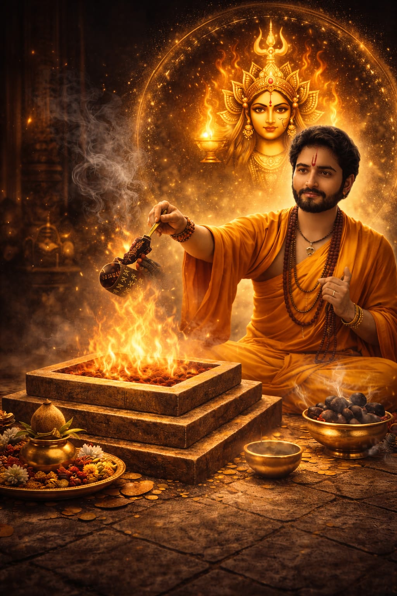

Karz Mukti Anushthan is a powerful Vedic ritual performed to remove financial blockages, reduce debt burden, and restore economic stability. This sacred havan is conducted with proper mantra discipline and spiritual procedures to clear karmic financial obstacles and attract prosperity.
This ritual is recommended for:
Performed under the blessings of Maa Baglamukhi, this Anushthan helps improve financial flow, balance planetary effects, and open new opportunities for stability and growth.
Shatru Badha Nivaran Anushthan is performed to neutralize hidden enemies, workplace politics, legal aggression, and unseen opposition. This powerful ritual invokes divine protection energy to dissolve negativity and restore balance.
This Service is ideal for:
Through disciplined mantra practices and sacred fire rituals, negative influences are spiritually reduced and protective energy is strengthened.
Marriage Delay Puja is conducted to remove planetary obstacles responsible for delayed marriage, broken engagements, or repeated alliance failures. This ritual harmonizes Venus and Jupiter energies to activate marriage prospects.
Recommended for:
The ritual restores emotional harmony and supports favorable circumstances for timely marriage.
Court Case Victory Havan is performed to strengthen legal position, reduce opposition strength, and support favorable outcomes. The ritual enhances clarity, confidence, and removal of legal obstacles.
Best suited for:
The sacred fire ceremony invokes divine justice energy and supports righteous resolution.
This ritual is performed to remove business stagnation, activate new opportunities, and improve financial flow. It strengthens Mercury and Jupiter energies for commercial stability and expansion.
Ideal for:
Online havan Services allow global participation through live ritual performance following proper Vedic procedures. Devotees can connect from anywhere while maintaining spiritual authenticity.
services include:
This ritual is performed to remove negative energy influence, spiritual disturbances, and energy imbalance. It helps restore inner stability, confidence, and protective aura strength.
Recommended for:

Lal Mirchi Havan is performed to eliminate strong negativity, enemy influence, and persistent obstacles. Red chilies offered in sacred fire create a powerful purification effect.
Ideal for:
Book your Online Havan Consultation today and experience disciplined Vedic ritual services performed with authenticity and devotion.
Contact Tantra Kuti Now